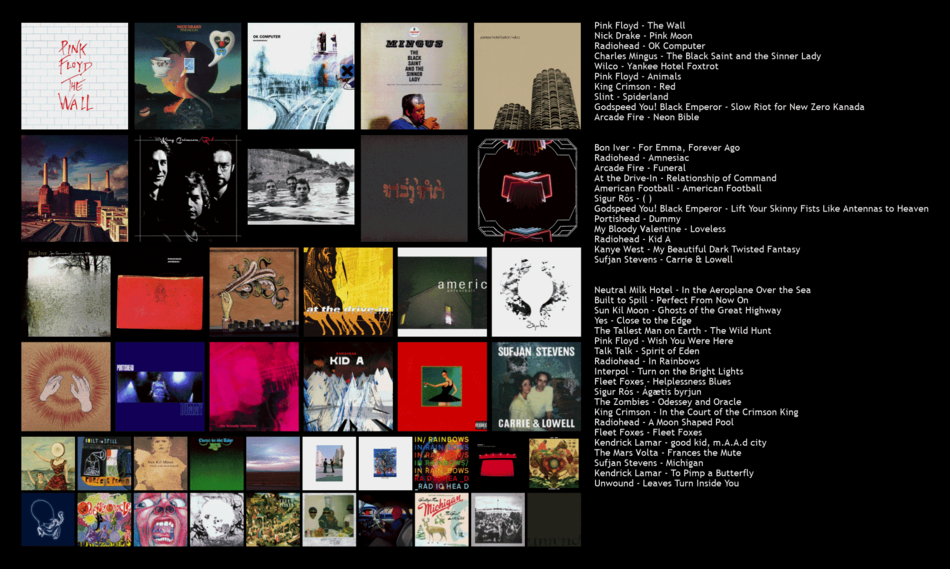

| Home | Projects | Resume | Fun/Misc. |
Prior to the pandemic, I had a weekly show on our university's radio station, KUST. My show, Just Wavy Air, mainly consisted of music in the indie sphere, but I'll dip my toes into different genres from time to time. I'm currently not recording for at least this semester, but you can still check out archived shows on KUST's Mixlr page. Anything with "Just Wavy Air" in the title is me.
Music has been a significant part of my life for as long as I can remember. I started piano when I was around 6, and I started guitar a few years after. Guitar in particular is something that has stuck with me. Singing with it is one of life's greatest treasures to me.
In addition to performing, I am also an avid listener of whatever music I can find. My tastes basically align with what I play on Just Wavy Air, but below is a chart of my favorite albums to get a better idea.
While music is something that has permeated my life as long as I can remember, it has only been relatively recently that I have worked on music of my own. Right now, I'm making music under the name Silverprint. I currently have only one track published on Bandcamp, but I hope to make more stuff in the near future. In addition to writing my own music, I have contributed guitar parts to a couple songs by Patricia Taxxon, which you can listen to below.